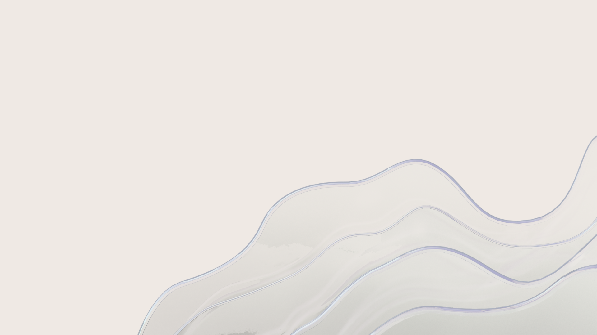
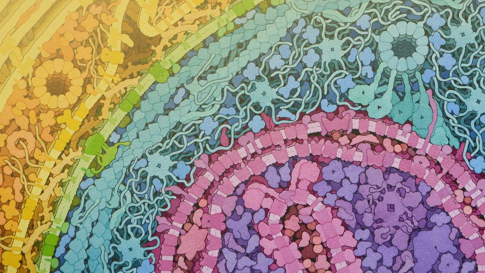

Alexia Pereira Santos
I'm Data Scientist
About
I hold a Bachelor's degree in Statistics and am currently working as a Data Scientist with over 4+ years of experience in data-driven analysis, statistical consultancy, data mining, and modeling across industries such as finance, agribusiness, media, pharmaceuticals, and telecommunications. I am proficient in R, Python, SQL, SAS, and Power BI, with practical experience using AWS, Databricks, and GCP, primarily focused on SQL querying and utilizing their interfaces.
With a strong backgroung in applying supervised and unsupervised machine learning approaches, along with statistical techniques, to generate practical solutions for business challenges. I am driven by a strong interest in studying machine learning, artificial intelligence, and big data to continuously expand my expertise and drive innovative solutions.
Projects
Here are some highlights of my professional and academic journey, along with the projects I have worked on.
Professional Experience
Data Scientist - ACCENTURE BRAZIL
2021 - Present
Led client segmentation to develop strategies for relationship, profitability, loyalty, and retention, managing data preparation and analysis.
Cleaned unstructured data for a social project and created dynamic visualizations and dashboards.
Developed R scripts for basket analysis and data mapping, conducted distributor and farmer analyses, automated processes, and built interactive dashboards with Alteryx, Python, and Power BI.
Created automated call center performance reports, structured databases, dynamic visualizations for management, and led stakeholder meetings and team operations.
Participated in a global project focused on optimizing marketing campaigns to increase lead generation and sales, collaborating with teams from various regions. Developed analyses in SQL, created visualizations and implemented modeling in Python.
Data Scientist Intern - ACCENTURE BRAZIL
2020 - 2021
Assisted in Advanced Modeling tasks for a digital channels project, creating scripts for routine execution and conducting Bayesian A/B testing. Supported the exe- cution of a channel recommendation model to enhance campaign conversions.
Student Assistants - UNICAMP
2016 - 2019
Evaluated performance of medical students at FCM - UNICAMP in social inclu- sion programs. Assessed financial aid awareness and developed APIs for data visualization.
Conducted research on Music students at IA - UNICAMP, analyzing enrollment trends and monitoring study habits and resource use.
Education
Bachelor in Statistics - UNICAMP
2016 - 2021
Statistical Consulting Projects:
Wireless Sensor Networks: Analyzed signal strength in greenhouse scenarios using GAM and GAMLSS.
Neurometabolite Study: Assessed neurometabolite levels and neuropsychiatric links using GLMM
Courses
Studies in Data Science - UNICAMP
2018 - 2021
Methods of Supervised Machine Learning.
Methods of Multivariate Data Analysis.
AI Applications in Industry - ICMC USP
2024 - Present
Postgraduate course as special student focusing on data analysis, AI modeling for industrial challenges, and architectures like RAMI 4.0 and 5C. AI DevOps, MLOps, and integrating AI methods into industry workflows.
Learning for fun
MiVectorViz
2022
MiVectorViz is a Shiny Application to explore the plasmapR package features. The application aims to faciliate plotting plasmid maps from genbank files. (In construction)
Twitter Capybara BOT
2022
@BiotecUnilaBOT is a X/Twitter Bot, automatized by TwitterCapybaraBOT. It might help find newer students or provide information for people interested to know about Bsc. Biotechnology-UNILA. Exploring tweepy package, Twitter API v2 and Github Actions (descontinued due X's licenses)

Contact
Feel free to reach out for collaborations, opportunities, or just to connect. I look forward to hearing from you!
Address
São Paulo - Brazil
sc.assis.2017@aluno.unila.edu.br